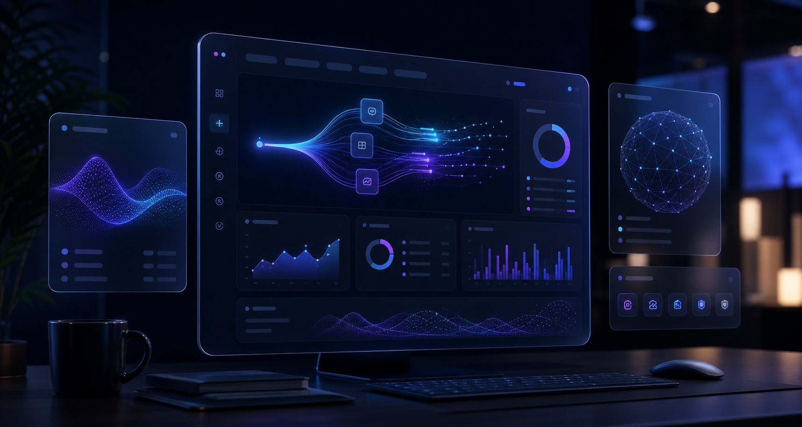

月間入力作業の削減目安。

初動対応時間の短縮目安。
CRM、メール、フォーム等の連携枠。
Product Modules
何ができるかではなく、業務がどう変わるかを見せる。
AIサービスのHPは、技術名だけだと伝わりません。導入前の課題と導入後の状態を同じ画面で見せる構成にします。
問い合わせ自動整理
フォーム、メール、チャットの内容を要約し、優先度を付けます。
対応漏れを減らす商談メモAI化
会話メモを商談ログ、次アクション、見積メモへ自動整形。
営業の入力負担を削減レポート自動生成
週次レポート、案件状況、対応履歴をチーム向けに出力。
共有の速度を上げるProcurement Board
稟議前に確認したい、導入判断の材料まで用意する。
AI/SaaSサイトは、機能紹介だけでは商談化しにくいです。セキュリティ、連携、導入期間、費用目安を先に出すことで、資料請求前の不安を減らします。
社内利用の安心材料
権限管理、ログ確認、データ取り扱い、社内利用ルールを説明。
情シス確認用の材料既存ツール連携
CRM、メール、フォーム、スプレッドシートとの連携可否を明示。
導入前に確認導入までの期間
初期設定、テスト運用、社内説明、定着支援までの流れを提示。
2〜4週間目安費用の考え方
初期設定、月額、導入支援、追加開発の範囲を分けて表示。
見積相談へ誘導
Ready for sales meeting
資料請求
30分デモ
セキュリティ確認
Workflow Map
Prompt → AI Assist → CRM → Report
導入後の業務フローを視覚化し、商談前に「何が変わるか」を伝えます。
Case Study
導入効果を数字で見せて、資料請求につなげる。
導入事例は、会社名よりも「課題、導入内容、成果」が大切です。BtoB向けに短いカードで判断材料を並べます。
メール確認、CRM登録、報告が担当者ごとに分散。
対応履歴を自動整理し、次アクションを可視化。
Book a Demo
資料請求、デモ予約、問い合わせを1画面で受ける。
BtoBサイトでは、すぐ購入よりも「まず話を聞く」が自然です。担当者が入力しやすい項目に絞って、相談へつなげます。
Decision Proof
検討者が止まらないための判断材料。
情報管理が気になる企業向けに安心材料を置きます。
問い合わせ前の予算感をつかめるようにします。
ツール導入後の不安を減らすサポート枠。
Before Contact
検討者が社内で説明できる材料まで、ページに置く。
IT・AIサービスは、かっこよさだけでは問い合わせに進みません。導入効果、セキュリティ、連携、料金目安、資料請求の導線をそろえ、比較検討の画面として使えるようにします。
導入効果を数字で見せる
削減時間、対応速度、導入ステップ、事例を同じ画面で確認。社内共有しやすい判断材料を作れます。
セキュリティと連携を明記
権限、ログ、データ管理、CRMやフォーム連携など、資料請求前に確認されやすい項目を整理します。
デモ予約へ自然につなげる
資料請求、30分デモ、問い合わせの導線を分けて配置。まだ購入前の見込み客も離脱させにくくします。
Use This Template
サービス名、機能、事例、資料請求導線を差し替えて、AI/SaaSサイトとして公開できます。
AIツール、SaaS、開発会社、業務改善サービス、BtoBプロダクトに合わせて調整できます。